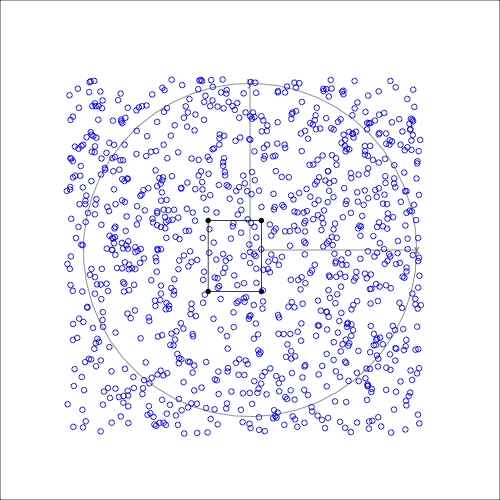

The goal of kultarr is to generate and understand how anchors are generated in a simpler intuitive approach.
Installation
You can install the development version of kultarr like so:
pak::pak("janithwanni/kultarr")Example
This is a basic example which shows you how to solve a common problem:
library(kultarr)
## basic example code
library(randomForest)
#> randomForest 4.7-1.2
#> Type rfNews() to see new features/changes/bug fixes.
library(dplyr)
#>
#> Attaching package: 'dplyr'
#> The following object is masked from 'package:randomForest':
#>
#> combine
#> The following objects are masked from 'package:stats':
#>
#> filter, lag
#> The following objects are masked from 'package:base':
#>
#> intersect, setdiff, setequal, union
library(tidyr)
set.seed(145)
train_data <- data.frame(x = runif(1000), y = runif(1000))
train_data[21, ] <- c(0.5, 0.5)
train_data$cls <- factor(ifelse(train_data$x > 0.5, "U", "D"))
rf_model <- randomForest(cls ~ ., data = train_data)
model_func <- carrier::crate(function(data) {
return(randomForest:::predict.randomForest(!!rf_model, data))
})
final_bounds <- make_anchors(
dataset = train_data,
cols = c("x", "y"),
instance = train_data[21, ],
model_func = model_func,
class_col = "cls",
verbose = FALSE
)The final_bounds variable is a list containing both the history of the algorithm (reward_history) and the resulting anchor (final_anchor).
str(final_bounds)
#> List of 4
#> $ final_anchor : tibble [2 × 7] (S3: tbl_df/tbl/data.frame)
#> ..$ id : int [1:2] 1 1
#> ..$ x : num [1:2] 0.4 0.55
#> ..$ y : num [1:2] 0.4 0.6
#> ..$ bound : chr [1:2] "lower" "upper"
#> ..$ reward: num [1:2] 1.24 1.24
#> ..$ prec : num [1:2] 0.714 0.714
#> ..$ cover : num [1:2] 0.603 0.603
#> $ reward_history:'data.frame': 16 obs. of 5 variables:
#> ..$ node_tag: chr [1:16] "1:1:1:1" "2:1:1:1" "1:2:1:1" "1:1:2:1" ...
#> ..$ reward : num [1:16] 0.922 1.123 0.766 0.951 0.951 ...
#> ..$ prec : num [1:16] 0.556 0.714 0.357 0.556 0.556 ...
#> ..$ cover : num [1:16] 0.184 0.286 0.286 0.286 0.286 ...
#> ..$ id : int [1:16] 1 1 1 1 1 1 1 1 1 1 ...
#> $ perturbs : tibble [441 × 4] (S3: tbl_df/tbl/data.frame)
#> ..$ x : num [1:441] 0.4 0.4 0.4 0.4 0.4 0.4 0.4 0.4 0.4 0.4 ...
#> ..$ y : num [1:441] 0.4 0.41 0.42 0.43 0.44 0.45 0.46 0.47 0.48 0.49 ...
#> ..$ id : int [1:441] 1 1 1 1 1 1 1 1 1 1 ...
#> ..$ preds: Factor w/ 2 levels "D","U": 1 1 1 1 1 1 1 1 1 1 ...
#> .. ..- attr(*, "names")= chr [1:441] "1" "2" "3" "4" ...
#> $ perturb_bounds: tibble [2 × 4] (S3: tbl_df/tbl/data.frame)
#> ..$ id : int [1:2] 1 1
#> ..$ x : num [1:2] 0.4 0.6
#> ..$ y : num [1:2] 0.4 0.6
#> ..$ bound: chr [1:2] "lower" "upper"The resulting anchor will have the reward, the precision and the coverage of the underlying algorithm as additional diagnostic information.
final_bounds$final_anchor
#> # A tibble: 2 × 7
#> id x y bound reward prec cover
#> <int> <dbl> <dbl> <chr> <dbl> <dbl> <dbl>
#> 1 1 0.4 0.4 lower 1.24 0.714 0.603
#> 2 1 0.55 0.6 upper 1.24 0.714 0.603The diagnostic information can be helpful in understanding where the algorithm explored in the solution space.
Visualizing anchors in high dimensions
If the anchor has a dimension larger than 3 then it is possible to visualize it in high dimensions using tours.
There are several S7 classes built to make the process of visualizing the bounding box(es). (The option to visualize multiple boxes is still under development)
1. Create a bounding_box object by giving the result from the Multi Armed Bandit algorithm
bnd_box <- bounding_box(
bounds_tbl = final_bounds$final_anchor,
target_inst_row = train_data[1, ] |> select(x, y),
point_colors = "black",
edges_colors = "black"
)2. Create an anchor_tour object to hold the data needed to create the animation
anc_tour <- anchor_tour(
bnd_box,
train_data |> select(x, y),
"blue"
)3. Animate using the animate_anchor function by passing the anchor_tour object
animate_anchor(
anc_tour,
gif_file = "man/figures/tour_animation.gif",
width = 500,
height = 500,
frames = 360
)